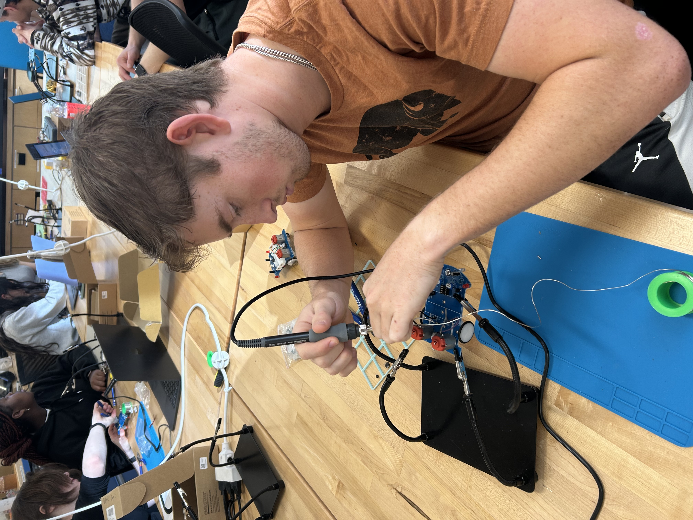
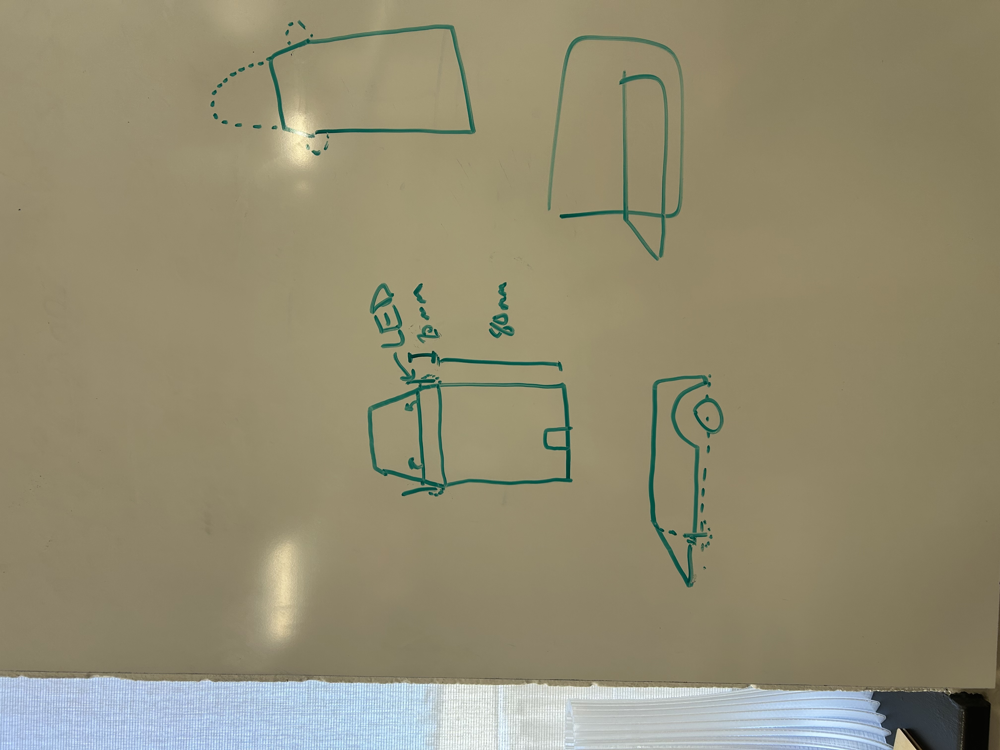
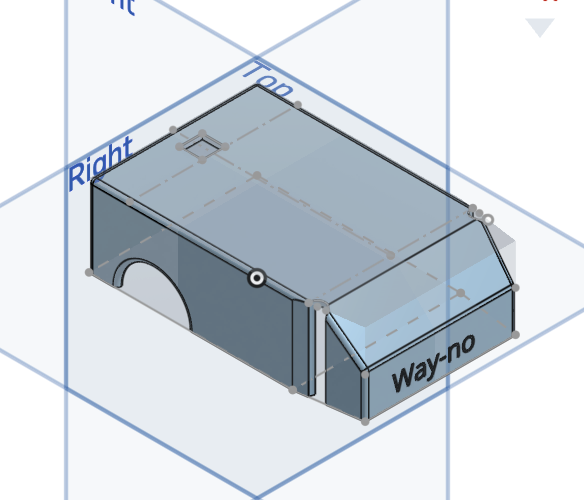
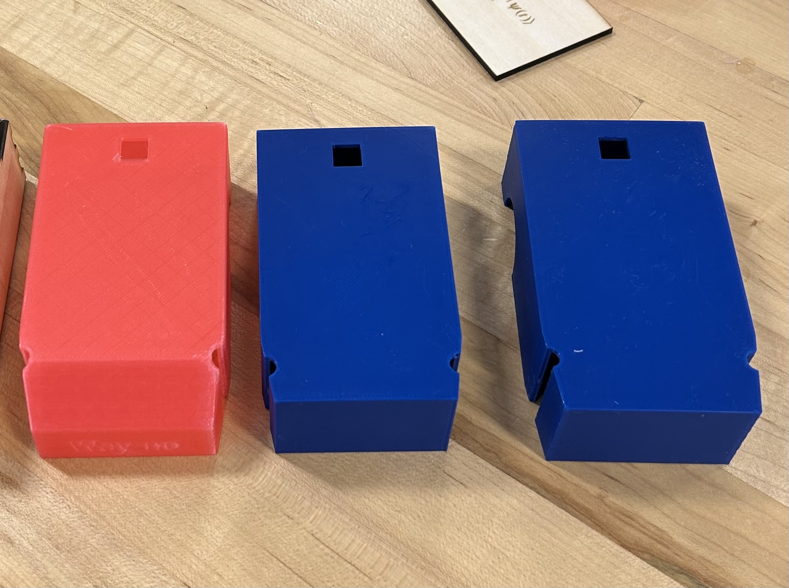
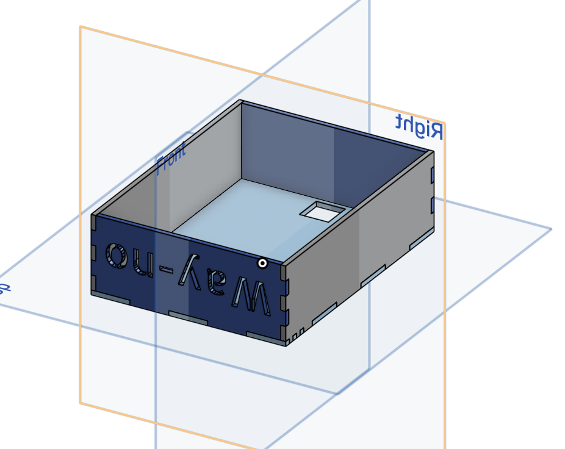
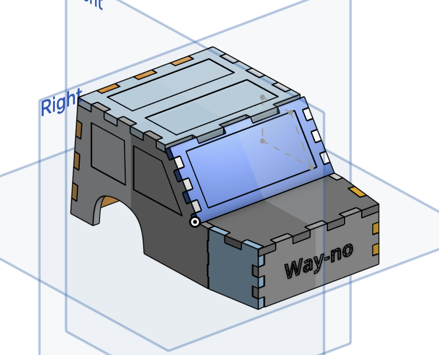
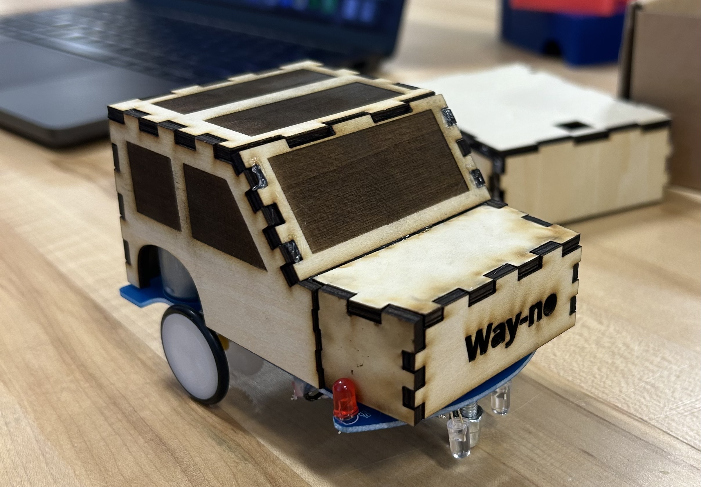

Design Project: Design For Manufacturing
Printer Settings
Prusa Mini+ with Input Shaper 3D Printer
Generic PLA filament
0.4mm Nozzle
0.2mm Layer Height
Speed Optimization
Automatic Support Generation
Technical Tools
LightBurn
OnShape
Laser Cutting Design Tutorials
Other previously used tools: Github, Sublime, Prusa Slicer
Overview
Download Formal Write UpIntroduction to Electronics
This project began with assembling and soldering a small, simplistic car that can change direction based on feedback delivered to light sensors. The cars came in kits with instructions on how to put them together. These instructions were quite rudimentary in nature, as they only described what part should go where. While this is all the information needed to build these cars, it omits the subtleties of the soldering process needed to create a car that works well. For example, solder naturally flows towards heat, so to apply a usable solder, one must first heat the part they wish to join to the circuit board, then apply the metal. This was my first experience soldering, and building this car changed how I thought about the process and functionality of soldering. Before this project, I figured I might be able to fix the zipper that broke on my favorite jacket with a small solder joint. Now I understand that soldering is not a tool to mechanically fix two things together. Soldering is much more important for fixing electrical connections. While it does provide some support, we ended up reinforcing many components on our circuit board with hot glue. Hot glue, when dry, is much better at adhesion than soldering. As such, many of the components we knew might be jostled around were covered in hot glue to prevent the solder from snapping. Another aspect of assembling the car that we couldn’t have realized would be so difficult by reading the instructions was the small worm gear that transferred power from the motors to the wheels. The worm gear needed to interface with the gear attached to the motor such that there would be no contact with the circuit board itself, and the worm gear needed to consistently provide spin to the wheels. Only a near-perfect placement could fulfill both of these requirements. The light sensors also needed to be tuned so that the car would stay on the dark, taped track. We adjusted the sensors via pure trial and error until our car followed the track closely. The small kit car proved simple enough to be a great introduction to soldering and electronics but finicky enough to also be a great engineering challenge. A good car required the ability to deviate from the instructions in order to reduce the likelihood of failure from any of the individual components.
Soldering Process

Pictured here is my partner Ben working on our car's circuitry. While constructing the car, we used a few different soldering kits. It was quite surprising to see how the process differed based on the quality of the kit we used. Soldering can be a very intuitive process, unless your equipment is low-quality. If your equipment is low-quality, it can turn into a challenging task.
Designing a Chassis Enclosure
Our car would not have been nearly street-legal without a sturdy chassis to protect the internal components. So, the natural next step was to design a body in OnShape and 3D print it using our Prusa Minis. Because this was a partner project, we created a shared file in OnShape in order to collaborate on the design. The design dynamic was tough to figure out at first. It seemed like both Ben and I had different plans for how the chassis should look and function. At first, I took the lead on measuring and designing our car’s chassis. After we had our measurements, we drew up a simple design plan on the whiteboard. Like any true design process, we were limited by specific constraints. The obvious constraint was that the chassis had to snugly fit the car's frame so it wouldn’t simply fall off. However, the car body also needed to be removable so we could change the batteries. In addition, we needed a way to turn the car on, ideally without removing the chassis. This meant we needed to include a small hole lined up as well as possible with the small on switch. The body also needed to make room for the wheels, as well as the LEDs on the top that indicated which wheel on the car was spinning at any given time. To accomplish all this, we first need precise measurements of the car’s dimensions. We took said measurements with a digital caliper that returned lengths as small as a hundredth of a millimeter. Once we had our measurements, we created a set of variables in OnShape to facilitate later size adjustments. As I mentioned earlier, during this part of the project, I was leading the OnShape design efforts. However, after I took the measurements and set the variables, it quickly became obvious that Ben had a much greater talent for 3D CAD than I. He quickly took charge of the design, while I played a backseat role, printing and remeasuring as needed. We designed a relatively simple body with a hole in the top for the switch and a front section that bypassed the indicating LEDs so they could still be seen. Because we wanted our body to fit as tightly as possible to the car's frame, we ended up going through three separate iterations of the chassis, adjusting the width of the body each time. While this proved a little frustrating, the final product was worth it, as our car’s chassis fit with only about a millimeter of clearance.
Initial Schematic

This was our rudimentary plan for our 3D-printed chassis. We had simple measurements on our schematic and plans for how to construct the chassis in a way that was conducive to OnShape and the available tools. For example, we wanted to sketch a body in OnShape so that we could use the Shell tool to quickly create space within the chassis for the internals of the car while also dictating the thickness of the chassis.
OnShape Design

This is our design in OnShape. Here it is clear to see the allowances we had to make for our particular constraints, like a hole for the on switch and a hollow underside so it can be removed to switch out batteries. We often used tools like Shell and Remove to create the design as efficiently as possible. Not shown here are our variables we created to quickly adjust the dimensions of our car as needed.
Iterations

As mentioned above, we printed three separate bodies for our car before finally getting the right dimensions. Our first attempt didn’t fit at all. We failed to account for how the thickness of the chassis walls would affect the length and width of the design. By our second iteration, we had the length of the body perfect. Only by our third and final print did we tune the width to be snug to the car's frame. Pictured here are all of those iterations.
Laser Cut Chassis
In the final phase of this project, we designed a second chassis in OnShape specifically for laser cutting. While 3D-printing a body is an additive process, where the chassis is built up layer by layer, a cut is inherently reductive. We had to change our design focus to accommodate this new manufacturing process. In addition, laser cuts come out of the machine in sheets, so our chassis had to be assembled if we wanted a 3D structure. This initially worried me, as creating the joints for individual pieces to be put together is a tedious process, and making sure everything could be laid flat was extremely important. However, OnShape has a few incredible tools that are quite conducive to laser cutting. The first tool automatically creates finger joints. Finger joints look like small, evenly spaced notches in each part of the chassis so that they can fit together similar to puzzle pieces. While creating these by hand isn't difficult, it does take a lot of time. The finger joint tool meant we could create this feature in seconds. All this tool needs The design consists of separate parts, so each piece we want to laser cut must be separated in the software. The other tool that made the laser-cut design process much easier was called Auto-Layout. In order to be cut, each piece of our chassis needs to be laid flat, as I stated above. Again, this is very possible but very annoying to do by hand in OnShape. Lucky for us, there is a tool that does it automatically. Not only that, but the tool allows us to input the dimension of our cutting area, so the now-flat chassis pieces can be arranged in a way that can fit onto the limited surface area of the machine. For these tools to work well, we needed to adjust the thickness of our parts so they matched the thickness of the available plywood we were using to cut. Based on what we learned designing our 3D-printed chassis, I knew Ben was a more talented CAD designer than I. But he had also missed the class when we learned how to operate the software needed to do the laser cuts. This created a near-ideal dynamic, where Ben took the main design role while I ensured the file was ready for the machine and would contain all the features we wanted (shaded windows and a faux Mercedes logo). In total we produced two laser-cut chassis interactions. One I designed and cut while Ben was away, and the other was a team effort. I am glad to say it is obvious which one we collaborated on. The second iteration not only fit the car's frame better but also included more creative details as well. The laser-cutting process was great because while a 3D-printed body takes an hour, a laser-cut one can be manufactured and assembled with hot glue in half the time.
First Design

Pictured here is my very rudimentary laser-cut design. I suppressed the auto layout tool in OnShape so the desired final product would be apparent. As you can see, it is literally just a box with a hole and happens to be upside-down to boot. The final product turned out way too big and was (maybe obviously) not very visually appealing.
Second Design

This was our second and final laser-cut design. I’ve again undone the auto layout so the finished product is clearer to see. Obviously, this chassis is much more exciting. We decided to go big at the last second and included a comically large Mercedes logo to be glued to the hood of our car. This isn’t pictured here, but the logo ended up giving our design the character and comedy it was sorely lacking from the first iteration.
Laser Cut Chassis

Finally, we had a creative and personalized laser-cut chassis. In my opinion, this body is much more exciting than our 3D-printed one. It’s important to note the level of safety and precaution that goes into laser-cutting. Unlike 3D printing, there are quite volatile processes at work, and knowing how and when to stop a cut, or even a fire, is essential. In the background of this picture, you can actually see our first laser-cut car body. Not only is this kind of funny, but it illustrates just how much our designs improved throughout the project.